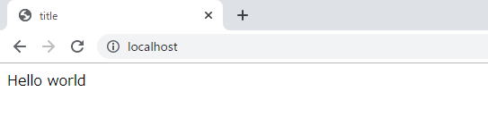

[PHP] インタフェースと抽象クラス、クラス継承、parent、this
こんにちは。明月です。
前述でPHPのClassを宣言して使う方法に関して説明しました。
link - [PHP] functionとclass使用方法、アクセス修飾子、そしてstatic
PHPもクラスがあるのでインタフェース(interface)と抽象クラス(abstract class)があります。
個人的な考えはPHPにはデータタイプの指示子がないのでインタフェース役がコンパイル言語(javaやC#)より活用性が少ないではないかと思います。筆者も実際にPHPでInterfaceを使ったことがないですね。
でも抽象クラスはよく使います。
<?php
$title = "title";
// インタフェース
interface ITest {
function run();
}
// 抽象クラス(インタフェースITestを継承した。)
abstract class AbstractTest implements ITest {
// ITest インタフェースを継承したので、run関数を必ず宣言しなければならない。
public function run() {
return $this->print();
}
// 抽象メソッド
protected abstract function print();
}
// 抽象クラス
class Test extends AbstractTest {
// AbstractTest 抽象クラスを継承したので「print」関数を必ず宣言しなければならない。
protected function print() {
return "Hello world";
}
}
$obj = new Test;
?>
<!DOCTYPE html>
<html>
<head>
<title>
<?=$title?>
</title>
</head>
<body>
<?=$obj->run()?>
</body>
</html>

上の例をみればITestインタフェースとAbstract抽象クラスとTestクラスがあります。
依存層は「ITest -> AbstractTest -> Test」でなっています。それでTestを宣言してrunを実行すればAbstractTestのrunメソッドが実行してrunメソッド中では派生クラスの「print()」関数を呼び出す結果は「Helloworld」になります。
ここでparentとthisの概念ですね。
<?php
$title = "title";
interface ITest {
function run();
}
abstract class AbstractTest implements ITest {
private $data;
public function run() {
// $thisは実行しているクラスのメンバータイプ、つまりprint()関数が呼び出すこと
return $this->print();
}
protected function setData($data) {
// $this->dataはメンバー変数dataで$dataはパラメータdataだ。
$this->data = $data;
}
protected function getData() {
return $this->data;
}
protected abstract function print();
}
class Test extends AbstractTest {
protected function print() {
// 上位クラスのsetDataを呼び出す。
// 参考でsetDataはprotectedタイプなので、派生クラスだけで参照が可能して外部では参照が不可能。
parent::setData("Hello world");
return parent::getData();
}
}
$obj = new Test;
?>
<!DOCTYPE html>
<html>
<head>
<title>
<?=$title?>
</title>
</head>
<body>
<?=$obj->run()?>
</body>
</html>
$thisの場合は実行しているクラスのメンバーをさしています。すなわち、メンバー変数か関数を指しています。$thisの場合はC++のポインタの形で矢印で指示(->)をしています。
しかしparentの場合はparent::の形で指しています。&parent->の形ではエラーが発生します。文法が面白いですね。
上の例はobj->runを通ってAbstractTestのrunが呼び出してrun関数で抽象メソッドprintが呼び出します。
抽象メソッドprintが呼び出したのでTestクラスのprintが呼び出してprint関数で上位クラスのsetDataにデータを入れてgetDataでデータを持ってきて変換する形です。
私がデータを「Hello world」を入れたので結果は「Hello world」が出ます。
- [CakePHP] Errorページを設定する方法2020/02/20 03:00:00
- [CakePHP] Transactionを使う方法とEntityクラスを利用してInsert、Update、Deleteする方法2020/02/19 03:00:00
- [CakePHP] ORMのテーブルFetch設定2020/02/18 03:00:00
- [CakePHP] Cakeフレームワークでデータベースに接続する時に使うQuery式とEntityクラス、Tableクラス、ResultSet2020/02/17 08:16:23
- [CakePHP] データベース(MariaDB(Mysql))を接続する方法2020/02/14 03:00:00
- [PHP] namespaceとuse2020/02/13 03:00:00
- [CakePHP] RequestとResponseに関して2020/02/12 03:00:02
- [CakePHP] PHPのCakeからAjax要請がある時、jsonタイプ(json_encode関数)でResponseする方法とControllerでViewを選択する方法2020/02/08 03:00:00
- [CakePHP] MVCフレームワークのCakeをインストールする方法2020/02/07 03:00:02
- [PHP] 自動require及びincludeをする方法(spl_autoload_register)2020/02/05 03:00:00
- [PHP] 匿名関数(ラムダ式)とクロージャ(closure)2020/02/04 03:00:00
- [PHP] PHPのコーディング領域とデザイン領域を分離するテンプレートライブラリ Smarty2020/02/02 03:00:00
- [PHP] Reflection - Variable編2020/02/01 03:00:00
- [PHP] Reflection - Method編2020/01/31 03:00:00
- [PHP] Reflection - Class編2020/01/30 03:00:00
- [C#] XMLをXPathを利用してデータを取得する方法2020/04/16 00:47:17
- [C#] NSoupライブラリを利用してXMLとHTMLをパーシングする方法2020/04/14 19:34:15
- [C#] 日付フォーマット2020/04/09 20:53:20
- [C#] ログライブラリ(log4net)を設定する方法2020/04/08 13:04:22
- [C#] Zipの圧縮ファイルを解凍するコードを作成する方法2020/04/07 11:17:44
- [C#] Zip圧縮コードを作成する方法2020/04/06 14:56:13
- [C#] 数字フォーマット(お金表示及び小数点以下表示)2020/04/03 00:38:37
- [C#] コマンド(cmd)を実行する方法(Processクラス)2020/03/31 07:15:40
- [C#] FTPに接続してファイルダウンロード、アップロードする方法2020/03/27 19:20:14
- [C#] HttpWebRequestを利用してウェブページを読み込みする方法2020/03/27 00:23:19
- [C#] Base64のエンコード、デコードする方法2020/03/26 02:19:50
- [Java] 日付フォーマット(SimpleDateFormat)を使う方法2020/03/25 00:36:53
- [Java] サーブレット(Servlet)の環境でファイルアップロード(プログレスバーでファイルアップロード状態を表示する方法)する方法2020/03/24 00:48:21
- [Java] Spring環境でファイルアップロード(プログレスバーでファイルアップロード状態を表示する方法)する方法2020/03/22 23:15:12
- [Java] FTPに接続してファイルをダウンロード、アップロードする方法(FTPClient)2020/03/20 02:44:36